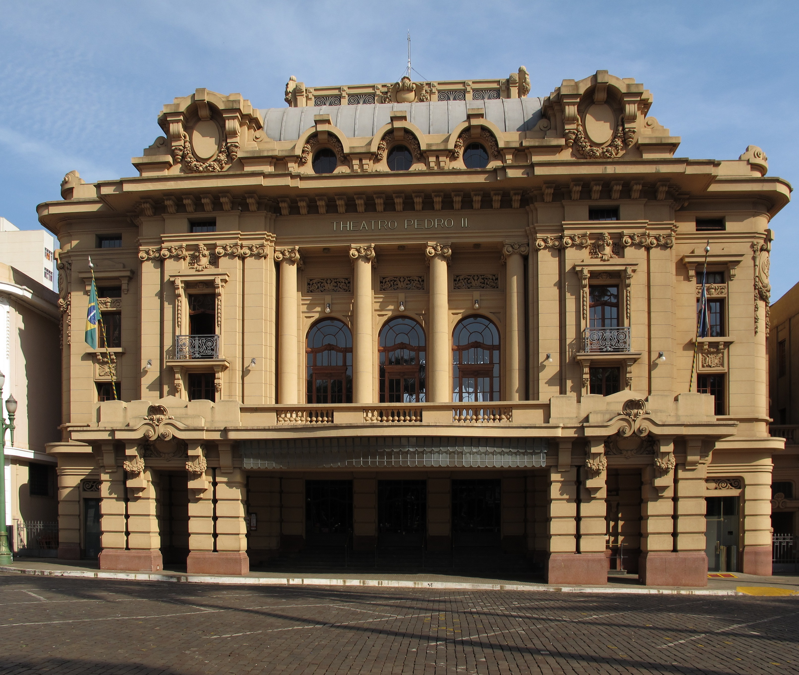

Kiev, Ucrânia
 Compre esta obra de arte como NFT
Compre esta obra de arte como NFT
artista
Natalia Dolgushina, produtora de conteúdo
Kyev (ou Kiev), capital da Ucrânia, é uma grande cidade
localizada às margens do rio Dnipro. É claro que ninguém em sã
consciência nadaria no rio, a menos que tenha crescido lá, e
nesse caso provavelmente já tentou em algum momento. Os verões
são quentes aqui e os invernos são frios, mas o outono e a
primavera são absolutamente incríveis.
A cidade em si é uma mistura de arquitetura pré-revolução,
pós-guerra e soviética, toda ela salpicada de varandas
modificadas. Se estiver na margem direita do Dnipro, a paisagem
é difícil de percorrer para quem anda de bicicleta e quem usa
salto. A margem esquerda é considerada muito menos interessante
e prestigiosa, mesmo por pessoas que vivem na periferia da
margem direita.
Criccieth, País de Gales
 Compre esta obra de arte como NFT
Compre esta obra de arte como NFT
artista
Steffan Warren, editor-chefe
Kseniya Glagoleva, gerente de projeto
A ruína medieval do Castelo de Cricieth tem vista para a cidade
abaixo de uma rocha que se projeta para o mar. Acredita-se que
tenha sido construído por Llewelyn, o Grande, no século XIII.
Cerca de 900 anos depois, a auto-intitulada *Pérola de Gales nas
margens de Snowdonia* tornou-se um destino turístico popular
durante os meses de verão.
A uma curta caminhada da estrada do castelo, você pode desfrutar
do melhor sorvete do mundo no Cadwalader's, cujo ingrediente
secreto, segundo rumores, são algas marinhas de origem local.
Outra reivindicação à fama é o fato de que Criccieth ganhou o
prêmio *Wales in Bloom* por cinco anos consecutivos por suas
espetaculares exibições florais pela cidade. Foi também a casa
de David Lloyd George, o único galês a ocupar o cargo de
primeiro-ministro do Reino Unido.
Berea, EUA
 Compre esta obra de arte como NFT
Compre esta obra de arte como NFT
artista
Travis Turner, autor e editor
Berea é uma pequena cidade localizada na parte central do
Kentucky. A cidade é cercada por belas florestas e campos. É
conhecida como a capital do artesanato do estado, e os
visitantes encontrarão muitas oportunidades de compras: lojas
com bijuterias artesanais, velas, artigos de madeira, galerias,
ateliês de vidro e muito mais. A cidade realiza um festival
anual que celebra o "pão de colher", um prato local feito com
pão de milho e servido com uma colher de pau.
No entanto, provavelmente é mais conhecido pela faculdade local.
O Berea College foi fundado em 1855 e foi o primeiro colégio no
sul a ser racialmente integrado, bem como o primeiro a ser
misto. De forma um tanto singular, não cobra mensalidades - todo
aluno recebe uma bolsa de estudos integral.
Muramvya, Burundi
 Compre esta obra de arte como NFT
Compre esta obra de arte como NFT
artista
Grevisse Kenguruka, editor técnico
Muramvya é uma das 18 províncias de Burundi. Na era do reino,
Muramvya era a capital real e em 2007, por causa de sua paisagem
cultural e natural, foi adicionada à Lista Provisória do
Patrimônio Mundial da UNESCO. Está localizada no centro de
Burundi, entre as capitais políticas e econômicas do país.
O clima é bastante frio à noite, mas durante o dia, você
pensaria que está no céu. A 2.665 metros (8.743 pés) acima do
nível do mar, o Monte Teza é um dos lugares mais frios da
província. Mas essa brisa fresca permite uma das maiores
plantações de chá e café do país, que representam a maior parte
das exportações do Burundi.
O Parque Nacional de Kibira, uma das maiores reservas de vida
selvagem para macacos, se sobrepõe a quatro províncias,
incluindo Muramvya. Este Parque Nacional encontra-se no ápice
das belas montanhas do Congo-Nile Divide, variando entre 1.550 e
2.660 metros de altitude. Está repleta de uma bela vegetação e
fonte para os vários rios e riachos que fornecem água em todo o
país.
Ribeirão Preto, Brazil

Compre esta obra de arte como NFT
artista
Camila B. Medici, programadora
Ribeirão Preto é um município brasileiro sede da Região
Metropolitana de Ribeirão Preto, no interior do estado de São
Paulo, Região Sudeste do país. Pertence à Mesorregião e
Microrregião de Ribeirão Preto, localizando-se a nordeste do
estado, distando da Capital do Estado cerca de 315 km.